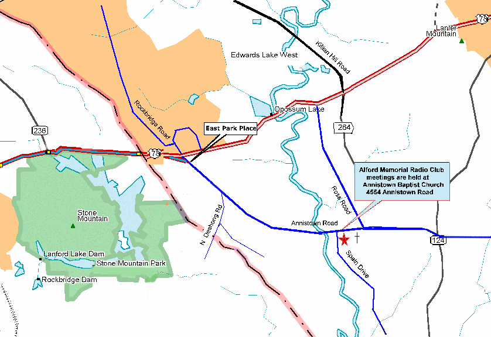

|

The Alford Memorial Radio Club - Place and Time of Meetings
Our Meetings are held on the Second Thursday of every month at 7:00 pm.
Talk-in instructions are via the 146.760 - Repeater with a 107.2 PL tone.
Our meetings are always open to anyone who wishes to attend, club member or not.
Please come out and enjoy an evening with us, we look forward to meeting you.
NOTE: For the time being we are meeting in the Fellowship Hall at the back of
the church where we usually hold our Christmas parties. Park in the lower lot
and enter the Fellowship Hall through the door near the playground for children.
NEXT CLUB MEETING:
January 13th , 2022
at 7:00 PM
PROGRAM:
Subject: Let's vote! We need a quorum!
The Alford Memorial Radio Club is inviting you to a scheduled Zoom meeting.
Please see the Groups.IO Calendar for more details.
Look for the red star on the map.

AMRC Homepage
This page was updated on : December 15, 2021
Copyright © 1999-2021 The Alford Memorial Radio Club Inc.
This Web Site is hosted by:
Webkat Design
|